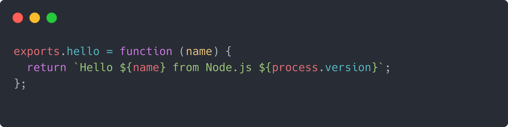
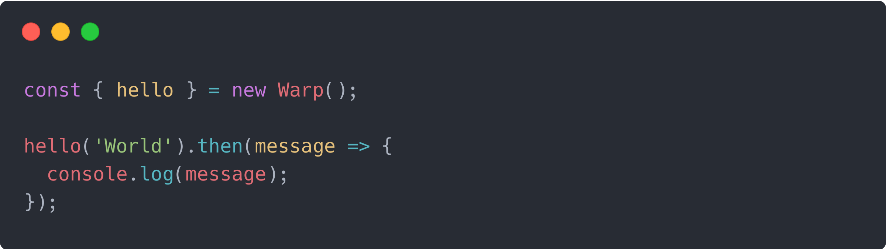

Module-as-a-Service
ScaleDynamics is the first cloud platform providing a managed Node.js module service. It is the most advanced and simple way to create microservices or backends in the cloud, it also opens new cloud management features.
The principle is simple: create a standard Node.js module, deploy it and call its exported functions in JavaScript or TypeScript with tradional function calls. No need to learn, use, configure, or route HTTP, all is managed for you.
When you say I call my module, what does that mean?
It means that instead of doing an http call from your JavaScript browser or Node.js to call your hosted module, you import the module like any other module and you call its exported JavaScript/TypeScript functions using objects. No need to learn, use, configure, route HTTP, behind the scene our compiler does all that for you, from advanced JS object serialization, integrity checks, try/catch forwards, http layer management...
Seems awesome! Want an example?
For example the module below exports a hello function.

After build we generate a client module that can be imported on the client side (browser, Node.js, node-red... like a standard module, so you can call the hellofunction like a standard function.

Deploy the module and your clients will call the hosted module. That's it!
What do you mean by client module?
You can see the client module like a driver to access your own hosted module. For example to access mongodb from Node.js you use the mongodb driver module (you don't manage http calls behind the scene). Similarly, to access your own hosted module, you use the client module.
Our tools automatically generate the client module to access your hosted module functions, nothing to code on your side.
Do I have all the tools I need to start coding this way?
Yes, we provide all you need to code, deploy and manage the run of your modules - have a look to our dev tools page.
Looking for some use cases?
- module is only accessed from a JavaScript client (browser, Node.js script, Node.js server or function),
- want to keep your microservice private not accessible from HTTP?
- want to develop a backend specific to a browser frontend?
- want to develop super fast without http learning, configuration, coding?
- want to access advanced cloud management features of the platform?
- want to expose your module on npm, or within your team so any other JS developer can use your microservice?